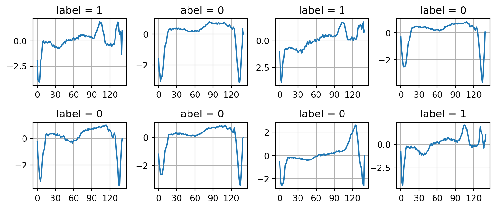
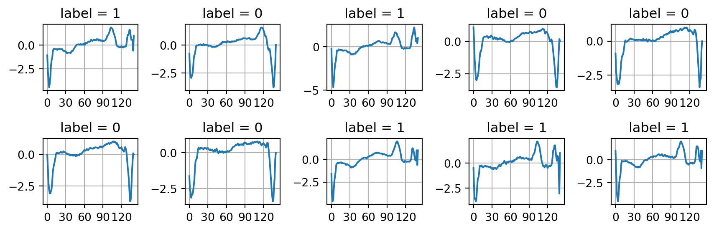

It is a shame that we have only one semester to learn so much new knowledge but we don’t have a real opportunity to really develop a meaningful and serious project.
Ultimate goal
In this assignment, we aim to build a mini-library that mimic two important machine learning frameworks in the machine learning world. In fact, they look ridiculously simple, they are one of the backbones of vast number of machine learning frameworks that have been used these days, including of course the genAI frameworks you are deploying. In the end of the assignment, we try to mimic two important classes provided in the celebrated library for machine learning: scikit-learn – Text contains hyperref. Particularly, we focus on two regression models
Linear Regression
Logistic Regression
Objectives
The two main objectives of this assignment consists of
Develop a mini-library sklearn_lite that mimic a small part of the Python library scikit-learn
Apply our built library to perform some fancy applications.
Besides these two main objectives, we take this opportunity to learn some knowledge that could be useful for you when you may choose ENG4200 and ENG5337
Quick tour to the world of machine learning
As mentioned above, we will develop two classes LinearRegression and LogisticRegression representing two basic regression models “Linear Regression” and “Logistic Regression”, respectively.
Linear Regression. is used to make prediction on the continous spectrum of data points.
Examples
Predict the house price of a given flat given its features such as total living area, number of bedrooms, distance to the city center, distance to schools, distance to public transporation stations, \(\ldots\)
Predict the age of a person by using their recent photos.
Predict the price of a bottle of wine given its information about the wine: number of years, location, type of grapdes, \(\ldots\)
Linear regression can be easily extended to Polynomial Regression to enhance its power and widen its capability in various complex applications.
Logistic Regression is used to classify data points into finite number of categories, such as \(0, 1, 2, \ldots, K\).
Examples
Given an image of one digit written by hand, predict what number it represents. The image represent \(1\) out of \(10\) digits: \(0, 1, 2, \ldots, 9\).
Given a patient’s record of ECG diagram, predict whether the patient is fine or not, i.e., just \(0\) (not sick) or \(1\) (sick).
Terminologies
Before going into the mathematics behind these two machine learning models, we need some terminologies.
Supervised Learning
Both of these regression methods are classified as supervised learning methods in which we have the input data given by \(\mathbf{x}^{(i)} = (x_1^{(i)}, x_2^{(i)}, \ldots, x_n^{(i)})\) and output data given by \(y^{(i)}\) for \(i = 1, \ldots, m\), where \(m\) is the number of samples.
Dataset
Assume that we are given a dataset \(\mathcal{D}\) with \(m\)samples, each sample has \(n\) input features\(\mathbf{x}^{(i)}=(x_1^{(i)}, \ldots, x_n^{(i)}) \in \mathbb{R}^{n}\) and \(m\) label \(y^{(i)}\), where \(i \in \{1, \ldots, m\}\) is an index of one sample. So the dataset \(\mathcal{D}\) can be written as follows
In regression problem the label \(y^{(i)}\) is a real number: \(y^{(i)} \in \mathbb{R}\). An example is given in the dataset concrete.csv.
import pandas as pdconcrete_data = pd.read_csv("./data/concrete.csv")n_samples =len(concrete_data)print(f"Number of samples = {n_samples}") # the first row (headers of data) not countedconcrete_data.head()
Number of samples = 1030
cement
slag
ash
water
superplastic
coarseagg
fineagg
age
strength
0
540.0
0.0
0.0
162.0
2.5
1040.0
676.0
28
79.99
1
540.0
0.0
0.0
162.0
2.5
1055.0
676.0
28
61.89
2
332.5
142.5
0.0
228.0
0.0
932.0
594.0
270
40.27
3
332.5
142.5
0.0
228.0
0.0
932.0
594.0
365
41.05
4
198.6
132.4
0.0
192.0
0.0
978.4
825.5
360
44.30
In this dataset, we use \(8\) input features are used to make prediction, that is \(\mathbf{x}^{(i)} \in \mathbb{R}^{8}\). The label \(y^{(i)}\) is a scalar (real) number.
Logistic regression
In classification problem the label \(y^{(i)}\) is an integral number (integer type) and it takes only finite number of values. If the problem involves classification of samples into \(K\) categories, the value of \(y^{(i)}\) can take only \(K\) possibilities: \(y^{(i)}\in \{0, \ldots K - 1\}\). Apparently, it does not matter how you set the value for \(y^{(i)}\) as long as there are only \(K\) possible values. However, it is conventional to start from \(0\) and then increase by \(1\). The mathematics stay the same; just formality of how you name things. An example is given in the dataset ecg.csv
import numpy as npdata = np.loadtxt('./data/ecg.csv', delimiter=',')X = data[:,:-1] # take all the rows, all the column from the first to the second lasty = data[:,-1] # take all the rows, the last columnn_features = X.shape[1]n_classes =len(np.unique(y))print(f"n_features = {n_features}")print(f"n_classes = {n_classes}")
n_features = 140
n_classes = 2
As this is the ECG diagram, let us draw them and show the label as on the figure title as well.
import matplotlib.pyplot as pltnrows, ncols =2, 4plt.figure(figsize=(8, 3.5))np.random.seed(seed=42) # just for reproducibility purposefor i inrange(nrows * ncols): plt.subplot(nrows, ncols, i+1) idx = np.random.randint(low=0, high=X.shape[0]) plt.plot(data[idx]) plt.title(f"label = {int(y[idx])}") plt.xticks(np.linspace(0, 120, 5)) plt.grid(True)plt.tight_layout()

Deploying LinearRegression and LogisticRegression in Python
Before we discuss the mathematics behind Linear Regression and Logistic Regression, let us examine two examples given in the two above-mentioned files concrete.csv and ecg.csv. We first write a Python program to make prediction of concrete strength and then another program to make prediction whether a patient is fine or not given their ECG data.
Linear regression using LinearRegression
First, we need to load data using the library Pandas and then convert the data into ndarray.
import pandas as pdimport numpy as npconcrete_data = pd.read_csv("./data/concrete.csv") # concrete_data is a DataFrame objectconcrete_data = concrete_data.to_numpy() # now, it is a ndarray objectprint(concrete_data)
You will learn soon that we need to test whether our prediction model is good or not. However, all the data we have are only avaliable in the csv file. For this reason, machine learning practioners normally split the dataset into two sets: training set and test set. The training set is used to train the machine learning model, which means seeking the model parameters \(\mathbf{w}\) and \(b\) explained in Assignment 1. In our project, we don’t have to training-test split when we build the library. I just want to explain the point.
from sklearn.model_selection import train_test_splitfrom sklearn.linear_model import LinearRegressionfrom sklearn.metrics import r2_scoreX_train, X_test, y_train, y_test = train_test_split(X, y, test_size=0.20, random_state=42)
Training the model by using scikit-learn is ridiculously easy as all the power-lifting has been done by the library.
model = LinearRegression() # define a LinearRegression modelmodel.fit(X_train, y_train) # training happens here -- look for model parameters w, b
LinearRegression()
In a Jupyter environment, please rerun this cell to show the HTML representation or trust the notebook. On GitHub, the HTML representation is unable to render, please try loading this page with nbviewer.org.
Parameters
fit_intercept
True
copy_X
True
tol
1e-06
n_jobs
None
positive
False
As explained above, we measure how good our prediction model is by compute \(R^2\) (read R-squared) score on both the training set and the test set. The \(R^2\) score being close to \(1\) means the model predicts extremely well, the score being close to \(0\) means the model predicts extremely bad. Note that \(R^2\) score can be negative – The square term may be misleading you to think that it must be a non-negative number.
According to these R-squared score, the model has done a pretty good job in predicting the concrete strength given \(8\) input features.
Logistic regression using LogisticRegression
As before, we need to load the csv file into an ndarray to prepare the data for training the logistic regression model.
data = pd.read_csv("./data/ecg.csv")data = data.to_numpy()# Plot some of the data for better understandingnrows, ncols =2, 5plt.figure(figsize=(9, 3.0))np.random.seed(seed=42) # just for reproducibility purposefor i inrange(nrows * ncols): plt.subplot(nrows, ncols, i+1) idx = np.random.randint(low=0, high=X.shape[0]) plt.plot(data[idx]) plt.title(f"label = {int(y[idx])}") plt.xticks(np.linspace(0, 120, 5)) plt.grid(True)plt.tight_layout()

Next, we split the original dataset into two sets: training set and test set. We can use any splitting proportion we want. Here, we split \(80\% - 20\%\) as above.
X_train, X_test, y_train, y_test = train_test_split(X, y, test_size=0.20, random_state=42)
Now, we define a LogisticRegression model object and perform the training
from sklearn.linear_model import LogisticRegressionlog_reg = LogisticRegression()log_reg.fit(X_train, y_train)
LogisticRegression()
In a Jupyter environment, please rerun this cell to show the HTML representation or trust the notebook. On GitHub, the HTML representation is unable to render, please try loading this page with nbviewer.org.
Parameters
penalty
'l2'
dual
False
tol
0.0001
C
1.0
fit_intercept
True
intercept_scaling
1
class_weight
None
random_state
None
solver
'lbfgs'
max_iter
100
multi_class
'deprecated'
verbose
0
warm_start
False
n_jobs
None
l1_ratio
None
Unlike regression problems in which we can measure how well the model is by using \(R^2\) score, we cannot use this score to measure how well the model performs on classification problem. Instead, we use the accuracy_score to measure how accurate the model can classify the samples into the right category. In our case, we measure how well the model can predict the samples in the test set. The score is just simply the number of correct predictions divided by the total number of predictions made.
The model can make prediction fantastically, almost \(99\%\) correctly. Now, we plot some data in the test set and show both the prediction as well as the ground truth label (the labels that are given by the data).